Gallery
of Kabbalistic Art & Symbols
Moses receiving the Tables of the Law
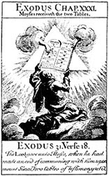
The
Tannaim, or initiates of the Jewish Mystery School, alone possessed a complete
understanding of the significance of the Ten Commandments. These laws are
esoterically related to the ten degrees of contemplation constituting the Path
of Ecstasy, which winds upward through the four worlds and ends in the
effulgence of AINSOPH. MPH
The 72 Names of God
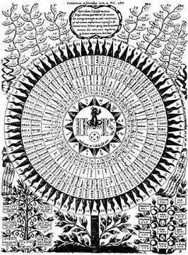
From
Kircher’s OEdipus AEgyptiacusThis
rare cut shows the name of God in seventy-two languages inscribed upon the
petals of a symbolic sunflower. Above the circle are the seventy-two powers of
God according to the Hebrew Kabbalah. Below are two trees, that on the left
bearing the symbols of the planets and that on the right the signs of the zodiac
and the names of the tribes of Israel. The esoteric doctrines of the Kabbalah
are in alignment with the secret teachings of all the schools of philosophy, but
the method by which its secrets are revealed to the wise and concealed from the
ignorant is most unusual. MPH
The Tetragrammaton
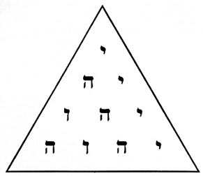
By
arranging the four letters of the Great Name, (I H V H), in the form of the
Pythagorean Tetractys, the 72 powers of the Great Name of God are manifested.
● = I = 10 = 10
● ● = H I = 5+10 = 15
● ● ● = V H I = 6+5+10 = 21
● ● ● ● = H V H I = 5+6=5+10 = 26
The Great Name of God = 72
The Hebrew Letters according to the Sepher Yetzirah
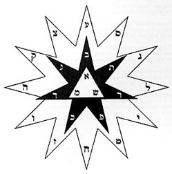
In
the central triangle are the three Mother Letters from which come forth the
seven Double Letters—the planets and the heavens. Surrounding the black star are
the signs of the zodiac symbolized by the twelve Simple Letters. In the midst of
this star is the Invisible Throne of the Most Ancient of the Ancients—the
Supreme Definitionless Creator. MPH
The Hebrew Triad
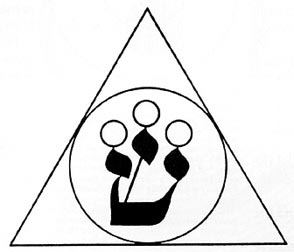
From
Westcott's The Isiac TabletThe letter Shin signifies the trinity
of the first three Sephiroth. The central circle slightly above the other two is
the first Sephira—Kether, the White Head, the Crown. The other two circles
represent Chochmah, the Father, and Binah, the Mother. From the union of the
Divine Father and the Divine Mother are produced the worlds and the generations
of living things. The three flame-like points of the letter have long been used
to conceal this Creative Triad of the Kabbalists. MPH
The Tetragrammaton in the Human Heart
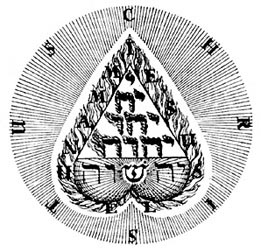
From
Böhme’s Libri ApologeticiThe Tetragrammaton, or four-lettered Name
of God, is here arranged as a tetractys within the inverted human heart.
Beneath, the name Jehovah is shown transformed into Jehoshua by the
interpolation of the radiant Hebrew letter , Shin. The drawing as a whole
represents the throne of God and His hierarchies within the heart of man. In the
first book of his Libri Apologetici, Jakob Böhme thus describes the meaning of
the symbol: "For we men have one book in common which points to God. Each has it
within himself, which is the priceless Name of God." MPH
The Plan of Divine Activity
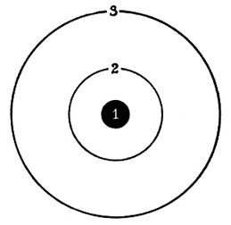
The
life of the Supreme Creator permeates all substance, all space, and all time,
but for diagrammatic purposes the Supreme, All-Inclusive Life is limited by
Circle 3, which may be called "the boundary line of Divine existence." The
divine Life permeating the area bounded by Circle 3 is focused at Point 1, which
thus becomes the personification of the impersonal life and is termed "the First
Crown." The creative forces pouring through Point 1 come into manifestation as
the objective universe in the intermediate space, Circle 2. MPH
The Kabbalistic Scheme of the Four Worlds
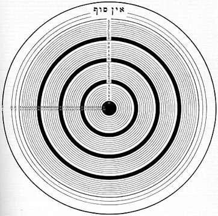
In
the above chart the dark line between X3 and A1 constitutes the boundary of the
original dot, while the concentric circles within this heavier line symbolize
the emanations and worlds which came forth from the dot. As this dot is
contained within the outer rings X1, X2, and X3, and represents the first
establishment of individualized existence, so the lower universe symbolized by
the forty concentric circles within the dot represents the lower creation
evolved out of and yet contained within the nature of the first Crown, which may
be called God, within whom the divine powers, the celestial beings, the sidereal
worlds, and man, live and move and have their being. It is highly important that
all the rings within A1 be considered as being enclosed by the primitive dot,
which itself encircled by the great ring X1, or the Auric Egg of AIN SOPH. MPH
The Four Sephirothic Trees
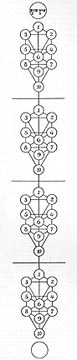
The
forty concentric circles shown here are arranged as four trees, each consisting
of ten circles. These trees disclose the organization of the hierarchies
controlling the destinies of all creations. The trees are the same in each of
the four worlds, but the powers vested in the globes express themselves
differently through the substance of each world, resulting in endless
differentiation. MPH
A Table of Sephirothic Correspondences
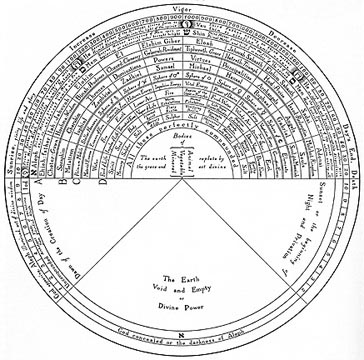
From
Fludd’s Collectio OperumThe
above diagram has been specially translated from the Latin as being of unique
value to students of the Kabbalah and also as an example of Robert Fludd’s
unusual ability in assembling tables of correspondences. Robert Fludd ranks
among the most eminent Rosicrucians and Freemasons; in fact, he has often been
called "the first English Rosicrucian." He has written several valuable
documents directly bearing upon the Rosicrucian enigma. MPH
The Sephirothic Tree of the later Kabbalists
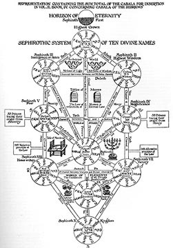
Translated
from Kircher’sOEdipus AEgyptiacusThe Kabbalists divided
the universe into four worlds, each consisting of ten spheres, arranged into
what is called the "Sephirothic Tree." This Tree is composed of ten circles,
representing the numbers 1 to 10, connected together by twenty-two canals—the
twenty-two letters of the Hebrew alphabet. The ten numbers plus the twenty-two
letters result in the occult number 32, which, according to the Mishna,
signifies the Thirty-two Paths of Wisdom.
The Sephiroth in the Form of the Solar System
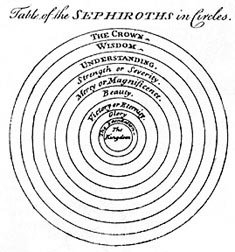
from
Maurice’s Indian AntiquitiesThomas
Maurice reproduced this engraving, which is a modification of the elaborate tree
above. The Sephiroth are here superimposed, decreasing in size as they decrease
in power and dignity. The Crown is the greatest and the all-inclusive, and the
Kingdom, which represents the physical universe, the smallest and least
important. MPH
The Vision of Ezekiel
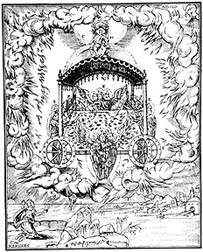
from
The "Bear" BibleThis plate, which is from the first Protestant
Bible published in Spanish, shows the Mercavah, or chariot of Jehovah, which
appeared to Ezekiel by the river Chebar. According to the mystics, the wheels
supporting the throne of God represent the orbits of the planets, and the entire
solar system is properly the Mercavah, or chariot of God. One of the divisions
of the Kabbalah—that dealing with the arts and sciences of those planes which
are under the heavens—is called the Mercavah. MPH
Noah and his Zodiacal Ark
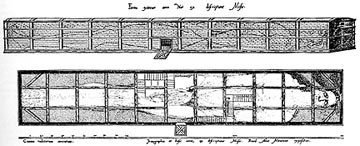
From
Myer’s QabbalahThe
diagram shown above is also reproduced in The Rosicrucians, by Hargrave
Jennings. This author adds to the original diagram appearing in Antiquitatum
Judaicarum Libri IX the signs of the zodiac, placing Aries at the head and
continuing in sequential order to Leo, which occupies the fifth cross section of
the ark. Jennings assigns the panel containing the door to the undivided
constellation of Virgo-Libra-Scorpio (which is continued into the first
subdivision of the second section) and the remaining four cross sections to the
constellations from Sagittarius to Pisces inclusive. "When the androgenic
Scorpio-Virgo was separated and the Balance or Harmony made from Scorpio, and
placed between Scorpio, i.e., male, and Virgo, i.e., female, then appeared the
12 constellations or signs, as we now have them. The ark is three stories high
(perhaps to symbolize Heaven, Man, Earth). In the figure of the Man, notice the
parting of the hair in the middle of the forehead and the arrangement of the
beard, whiskers, moustache and the hair, on the back of the neck and shoulders."
(See The Qabbalah by Isaac Myer.) MPH
The Ancient of Days
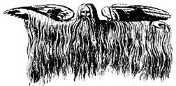
from
Montfaucon’s AntiquitiesIt
is in this form that Jehovah is generally pictured by the Kabbalists. The
drawing is intended to represent the Demiurgus of the Greeks and Gnostics,
called by the Greeks "Zeus, the Immortal Mortal," and by the Hebrews "IHVH." MPH
The Breastplate of the High Priest
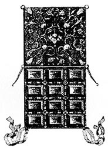
From
Calmet’s Dictionary of the Holy
BibleThe order of the stones and the tribe over which each
administered were, according to Calmet, as in the diagram here. These gems,
according to the Rosicrucians, were symbolic of the twelve great qualities and
virtues: Illumination, Love, Wisdom, Truth, Justice, Peace, Equilibrium,
Humility, Faith, Strength, Joy, Victory. MPH
The Garments of Glory
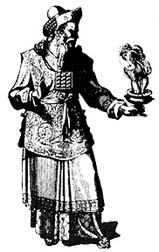
from Mosaize
Historie der Hebreeuwse KerkeThe robes of the High Priest of
Israel were often called "The Garments of Glory," for they resembled the
regenerated and spiritualized nature of man, symbolized by a vestment which all
must weave from the threads of character and virtue before they can become High
Priests after the Order of Melchizedek. MPH
The Headdress of the Priests
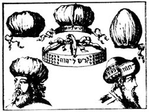
from Mosaize
Historie der Hebreeuwse KerkeOver the plain white cap of the
ordinary priests the High Priest wore an overcloth of blue and a band of gold.
On the front of the golden band were inscribed the Hebrew words "Holiness unto
the Lord." This illustration shows the arrangement of the bonnet both with and
without the golden crown. MPH
The Ark with its Cherubim
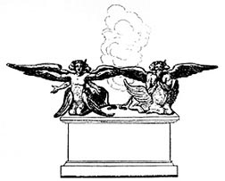
From
Calmet’s Dictionary of the Holy
BibleJosephus tells us that the Cherubim were flying
creatures but different in appearance from anything to be seen on earth;
therefore impossible to describe. Moses is supposed to have seen these beings
kneeling at the footstool of God when he was picked up and brought into the
presence of Jehovah. It is probable that they resembled, at least in general
appearance, the famous Cherubim of Ezekiel. MPH
Kabbalistic and Magic Alphabets
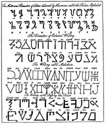
from
Barrett’s MagusCurious
alphabets were invented by the early and mediaeval philosophers to conceal their
doctrines and tenets from the profane. Probably the most famous is the angelic
writing, termed in the above plate "The Writing called Malachim." Its figures
are supposedly derived from the constellations. Advanced students of occult
philosophy will come upon many valuable documents in which these figures are
used. Under each letter of the first alphabet above is its equivalent in
English. Above each letter of the other